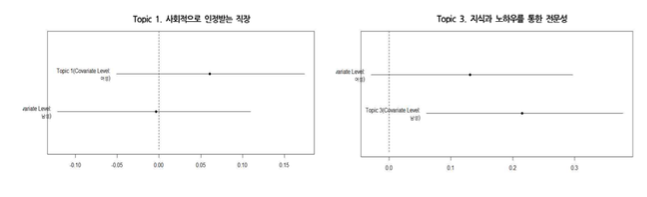
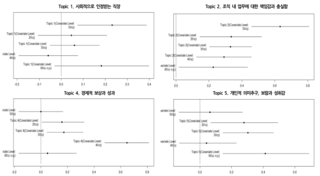
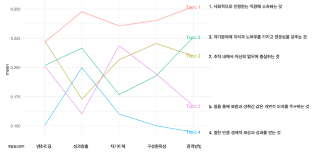

HR에 연관성이 높으면서도 자주 간과되는 데이터의 유형이 있다. 바로 질적자료유형이라 불리는 텍스트 자료들이다. 이러한 자료들은 기존에는 분석과 처리에 어려움이 있었기에 자주 생성되고 곧 버려지는 데이터였다. 또한 HR분석을 고려함에 있어 실무에서의 사례는 복잡하며 고려해야할 변수는 다양하고 데이터의 크기는 크다
HR에 연관성이 높으면서도 자주 간과되는 데이터의 유형이 있다. 바로 질적자료유형이라 불리는 텍스트 자료들이다. 이러한 자료들은 기존에는 분석과 처리에 어려움이 있었기에 자주 생성되고 곧 버려지는 데이터였다. 또한 HR분석을 고려함에 있어 실무에서의 사례는 복잡하며 고려해야할 변수는 다양하고 데이터의 크기는 크다. 일반적으로 여기에 조직의 고민이 있다. 즉 이러한 HR Analytics를 통한 인사이트의 효용이 분석을 위한 기술적 허들 또는 비용을 넘어서는가 하는 문제이다. 때문에 텍스트분석을 통해 얻는 비용이 상대적으로 크기 때문에 기업들은 분석을 외주나 컨설팅에 의존하는 경우가 있다. 그러나 이러한 경우에서도, 분석에서 나온 인사이트가 전략에 이어지려면, 조직 맥락과 전략에 대한 이해가 필수불가결 하다. 이는 조직내 사람에 대한 그리고 사람에의해 생성된 가장 풍성한 데이터를 분석하고 이해하며, 전략, 기능, 운영에 반영할 인재가 요구됨을 의미한다.
HR Analytics를 통해 얻을 수 있는 인사이트는 바라보는 시각에 따라 여러 유형이 존재할수 있는데, 전략과 운영을 축으로 하는 유형과, 이해관계자의 관점에서 경영자와 구성원 즉 수요자를 축으로 하는 유형, 그리고 데이터와 방법론을 축으로 하는 인사이트를 생각해 볼 수 있다. 현재 HR Analytics에 대한 관심이 새로운 데이터와 기술의 발전에 의해 견인되는 경향이 있으며 이에 대한 정리가 이루어지지 않았다는 점에서 ’데이터’와 ’방법론’을 축으로 생각해 볼수 있는 HR Analytics를 통해 얻을 수 있는 인사이트를 정리해 보는것은 유용하다.
조직 내에서 생성되는 질적자료를 분석함으로써 얻을수 있는 인사이트는 보통 기존에 쓰지 못했던 데이터를 분석함으로써 생기는 인사이트와 기존자료에 새로운 분석방법을 적용해 생기는 인사이트를 생각해 볼 수 있다. 전통적으로 이런 텍스트형식의 자료는 증빙을 목적으로 보관에 치우치거나 간단한 요약보고가 대부분이였다. 최근에 제시된 분석의 방법으로는 키워드 네트워크, Domain Knowledge Structure, 감성분석, 토픽모델링이 있다. 보통 키워드 네트워크는 키워드들의 공출현을 기반으로 드러나는 의미론적 구조를 탐구한다. 연관된 분석방법으로 Domain Knowledge Structure Mapping and Analysis가 있다. 이 방법은 학습자가 가지고 있는 특정 주제에 대한 인지구조를 학습내용 또는 교수자의 인지구조와 비교함으로써 학습자가 가지고 있는 컨셉들의 인지구조가 학습을 통해 얼마나 교수자의 또는 학습내용의 연결구조와 유사 또는 상의한지를 정량화한다. 이를 통해 학습성과를 분석할 수 있는 접근법이다. 감성분석은 특정주제에 대한 감성을 참여자들의 진술을 바탕으로 각 진술의 극성(긍정/부정) 또는 감성의 정도를 감성사전을 통해 파악하는 방법이다. 마지막으로 토픽모델링은 많은양의 질적자료를 요약하여 토픽으로 나타내고 각 토픽의 성격과 의미를 분석하는 방법이며 다양한 분야에서 다양한 용도로 사용된다. 이러한 방법들은 기존에 존재하였지만 데이터베이스화 하기 어려워서 작성되지 못하고 있었거나 적절한 분석방법의 부재로 방치되왔던 영역이다. 특히나 질적자료를 토픽으로써 요약하고 관심 조직관련 변수들과의 상관관계를 볼 수 있는 토픽모델링의 유용성이 높다고 생각한다.
본문에서는 이재은과 채충일 (2019) (이재은 and 채충일 2019) 의 연구결과를 바탕으로 제시된 가상의 사례를 통해 경력개발프로그램의 도입에서 활용될 수 있는 토픽모델링의 사례를 HR분석의 측면에서 조직 내 질적자료의 분석 및 활용의 예를 제시해보려고 한다.
최근 빠르게 성장하는 산업분야의 어떤 상장기업에서 경력개발 프로그램과 이에 대한 평가를 도입하기로 결정하였고, HR부서에게는 기업에 경력개발 프로그램도입을 위해 경력개발 프로그램과 평가에 대한 디자인을 개발하는 목표가 주어졌다. HR 부서 내 분석팀에게는 프로그램의 개발과 평가에 대한 준거를 마련하기 위해 경력성공에 대한 인식과 개발필요 요구를 분석해야할 목적이 생겼다. 분석팀은 개인 수준의 경력성공에 대한 인식이 집단수준에서 어떻게 이해되고 요약될 수 있는지 파악할 필요가 있었으나, 기존 리커트 척도를 활용한 요구조사를 통해서는 너무 많은 정보가 손실된다고 생각하였다. 이런 경우, 또 다른 대안으로 인터뷰를 통해 데이터를 수집하고 질적자료분석방법을 통해 코딩과 주제를 도출하는 방법이 있지만 이는 시간과 비용이 너무 크고, 많은 응답자의 질적자료를 체계적이고 일관성있게 분석하기에는 어려움이 예상되었다. 때문에 대안으로 질적자료에 대한 양적접근이며 비 지도학습방법을 알고리즘으로 하는 토픽모델링을 사용해 자료를 분석하기로 결정하였다. 분석팀은 수집된 자료에서 경력성공에 대한 인지가 어떤 토픽들로 수렴하고 이러한 토픽은 인구 특성에 따라 어떻게 다르게 나타나며 개발필요영역에 비추어 어떤 상관관계를 가지고 있는지를 파악하는것을 목적으로 하였고, 이를 위해 확률적 토픽모델링 방법중에 하나인 LDA(Latent Dirichlet Allocation) 알고리즘을 기반으로하는 STM(구조적 토픽모델링)을 사용하기로 결정하였다.
이러한 목적으로 기업의 고 성과자들 126명의 경력성공 인식, 개발필요영역에 관련한 서베이를 실시하였다. 이 서베이에서 HR담당자는 고 성과자들의 경력성공에 대한 인식은 개방형 설문응답을 통해 수집되었다.
총 5개의 토픽이 도출되었으며 도출된 토픽은 다음과 같다.
토픽간 연관정도를 나타내는 정보를 바탕으로 2차원 상에 표시하였다. 원의 크기는 토픽의 출현확률 또는 비율을 나타내며 토픽간 연결은 연관성 0.6을 기준으로 토픽간 연간관계가 0.6을 넘으면 토픽간의 관계가 높은것으로 나타내었다. 2차원 평면상에서의 토픽의 위치는 상대적 유사도를 나타내는데, 이때 각각의 축은 토픽에 대한 질적해석과 연관성을 바탕으로 개인의 성장지향과 조잭 내 성취지향으로 명명하였다. 이는 각각의 도출된 토픽들의 성격을 대변한다. 토픽5와 3은 개인의 성장 그리고 성취지향의 성향을 대변하는 토픽들로 자신의 업무에 대해 지식과 노하우 전문성을 가지고 일을통하여 개인적 성장을 추구하는 목소리를 반영한다. 토픽2와 토픽4의 경우 개인적 성장을 지향하는 내용과 키워드는 적지만 조직내 승진이나 보상에 대한 뚜렸한 목표를 대변한다. 사회적으로 인정받는 직장에 소속하는 것은 성취/성장 지향점에서는 다른 토픽들에 비해 거리가 있지만 조직내 자신의 업무를 충실히 하는것, 일한 만큼의 경제적 보상과 성과를 얻는것을 경력성공으로 보는 토픽들과 연관관계를 가지는 것으로 나타났다.
각 토픽의 발현확률에는 통계적으로는 남녀 차이가 크게 있지는 않았으나, 토픽1과 3의 경우 성별의 차이에서 토픽의 발현확률이 역전되는는 결과를 관찰할 수 있었다. 사회적으로 인정받는 직장에서의 소속감이라는 토픽은 여성에서 더 높은 출현확률을 보였고 남성의 경우엔 지식과 노하우를 통한 전문성이라는 토픽에서 더 높은 출현확률을 보였다. 이러한 차이는 출현한 토픽들이 성별에 따라 통계적으로 나타나는 뚜렸한 구별점을 찾는데는 실패하였으나, 각 성별에 따라 주요하게 나타나는 토픽의 경향성을 보여준다는데에 의의가 있었다.
 연령별 토픽의 출현확률(비율)을 보면 각 연령 구간별로 주로 나타나는 토픽이 있었는데, 20~30대의 경우, 개인의 의미추구, 보람과 성취감 이라는 토픽이 가장 높은 출현확률을 보였고, 40대의 경우 경제적 보상과 성과라는 토픽이 두드러지게 나타났다. 또한 50대의 경우 사회적으로 인정받는 직장, 조직내 업무에 대한 책임감과 충실함등의 토픽들이 두드러지게 나타났고, 60대의 경우개인의 의미추구 및 보람과 성취감이라는 토픽이 두드러지게 나타났다. 이를 통해 개인이 연령이 증가함에 따라 나타나는 경력성공에 대한 인식이 다를수 있으며, 어떤 연령대에서 어떤 토픽이 출현할 확률이 높아지는 지에 대한 정보를 제공한다.
 도출된 경력성공의 인식과 개발필요 영역간의 상관관계 분석을 통해 각각의 토픽(또는 토픽을 대변하는 그룹과) 이 어떤 개발필요영역(개발요구/인지)과 연관성을 갖는지 분석하였다. 그 결과 사회적으로 인정받는 직장에 소속하는 것을 경력성공으로 보는 토픽(또는 토픽을 대변하는 그룹)은 성과창출과 관리방법에 대한 개발필요 요구가 높았지만 변화리딩에 대해서는 낮은 토픽의 출현확률을 보였다. 전문성과 노하우를 경력성공으로 인지하는 토픽에서는 성과창출과 관리방법이 주요 개발필요 요구로 판별되었고 상대적으로 자기이해 부분의 요구는 낮았다. 조직 내에서 자신의 업무를 충실히 하는것이라는 토픽은 성과창출을 개발필요영역이라고 진술한 집단에서는 낮은 출현확률을 보였고 구성원의 육성에서는 높은 출현확률을 보였다. 일을 통해 보람과 성취감 같은 개인의 의미를 추구하는 것이라는 토픽은 성과창출의 요구는 낮은반면 자기이해에 대한 개발필요 요구가 높음을 알수 있다. 마지막으로 일한 만큼 경제적 보상과 성과를 얻는것이라는 토픽에서는 성과창출을 필요요구로 본 그룹에서는 출현확률이 높았으나 관리방법에 대한 요구는 낮았다.
 이를 통해 HR분석팀은 조직구성원의 경력성공에 대한 인식과 개발필요요구에 대한 상세한 정보를 얻을 수 있었다. 조직내에 경력성공의 인식은 개인적 성취와 성장을 아우르는 개인적 성장지향과 조직 내에서의 성취라는 두 축을 기반으로 생각해볼 수 있으며, 각 축에 따른 5가지 경력성공에 대한 토픽들이 도출되었다. 토픽비율(출현확률)에 따라 일한 만큼 경제적 보상과 성과를 얻는 것 (토픽4), 조직 내에서 자신의 업무에 충실하는 것(토픽2), 일을 통해 보람과 성취감 같은 개인적 의미를 추구하는 것(토픽 5), 자기분야에 지식과 노하우를 가지고 전문성을 갖추는 것(토픽3), 사회적으로 인정받는 직장에 소속하는것 (토픽1)순으로 요약될 수 있다는 것이다. 이를 통해 경력성공의 인식이 보상과 성취뿐만 아니라 내재적 의미에 경력성공의 차원을 반영한다는 점을 알 수 있었다.
또한 이렇게 도출된 토픽들은 인구통계적 특성에 따라(성별, 나이) 다른 출현확률을 보인다. 이는 각 세대간 중요하게 생각하는 워크벨류가 다르며 각 연령에 따라 추구하는 가치에 맞는 경력개발제도 및 프로그램이 필요하다는것을 의미한다. 예를들어 HR 담당자가 직무별로 제도나 CDP를 따로 만들어 운영할 순 없지만 포지션 조정이나 차별화 된 프로그램의 설계를 생각해 볼 수 있는데, 이와같은 텍스트 데이터에 대한 HR Analytics의 결과는 단지 이런점이 필요하다라는 시각을 넘어 어떤 가치들이 토픽으로 발현되는지에 대한 자세한 정보를 제공하고 있다.
마지막으로 각각의 개발필요영역에 따라 어떤 토픽들이 높게 또는 낮게 출현하는지에 대한 연관성을 파악할 수 있었다. Topic 1과 4에 속한 집단의 현재 경력에 대한 만족도는 Topic 2, 3, 5에 비해 높은 것으로 나타나 Topic 2, 3, 5 의 경력만족을 제고해야할 필요가 있다는 결론이 도출되었다. 또한 흥미롭게도 직무군 별로 토픽의 발현 비율이 다르게 나타나는 것도 확인하였는데, 직급, 직무에 따른 경력성공 인식 차이는 경력개발에 대한 상이한 요구로 이어지고 있었다.
HR 분석팀은 이러한 결과를 바탕으로 전체 구성원의 경력성공 정도를 측정할 수 있는 도구를 개발하였다. 이러한 도구는 앞서 언급한 것과 같이 개인적 성장과 조직 내 성취의 큰 두 가지 차원으로 구분되었으며, 다섯 가지 하위요인으로 구성되었다. 또한 이러한 도구를 바탕으로 주요 개입 대상이 되는 관리자 직급의 구성원을 대상으로 설문조사를 실시하여 개인이 추구하는 경력성공의 영역에서 점수가 낮게 나타난 구성원들을 선별하고 이들을 대상으로 경력개발 프로그램을 개발하였다. 또한 경력개발 프로그램을 실시한 이후 이들의 경력성공에 대한 인식이 어떻게 향상되었는지 모니터링 할 수 있었다. 이는 학습프로그램을 디자인 할때 기본자료로서 가치가 있다. 예를들어 참여자의 특성을 고려하기 힘든 집체교육을 넘어 개인별 맞춤형 학습을 조직에서 제공한다고 할때 이러한 개발필요영역과 도출된 토픽의 연관성을 기반으로 상이한 개발요구를 가진 집단에게 필요한 학습기회를 추천하는 시스템을 고려해 볼 수 있을 것이다.
HR Analytics가 각광을 받는것은 이전에 없었던 새로운 인사이트를 제공할 것이라는 기대 때문이다. 데이터와 방법론이라는 측면에서 본문은 HR Analytics를 통해 얻을 수 있는 다섯가지 인사이트의 유형을 제시하고 있으며 텍스트분석을 활용한 가상의 케이스를 제시함으로써 조직에서 HR과 연관성이 높지만 처리비용 그리고 분석방법의 부재로 인해 상대적으로 관심을 적게 받았던 텍스트자료에 대한 분석이 어떤 식으로 HR의 측면에서 활용될 수 있는지에 대한 간단한 예시를 보였다. 텍스트자료에 대한 분석은 특히 기존에 쓰지 못했던 데이터에 새로운 분석방법을 적용해 생기는 인사이트를 제공줄 수 있다. 그러나 어떤 기발한 분석도 기업전략에 도움을 주지 못한다면 의미가 없다. 또한 만병통치약과 같은 분석은 없다는 것은 다시 강조해도 부족함이 없다.
채충일 (chadchae@gmail.com) Pennsylvania State University
이재은 (violet80119@gmail.com) 건국대학교
이 포스트의 내용은 HR insight에 게제되었습니다.
이재은, and 채충일. 2019. “기업근로자 경력성공 인식의 다차원성과 차이: 토픽모델링의 적용.” 한국콘텐츠학회논문지.